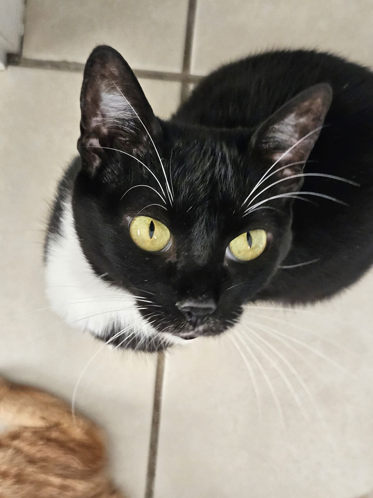
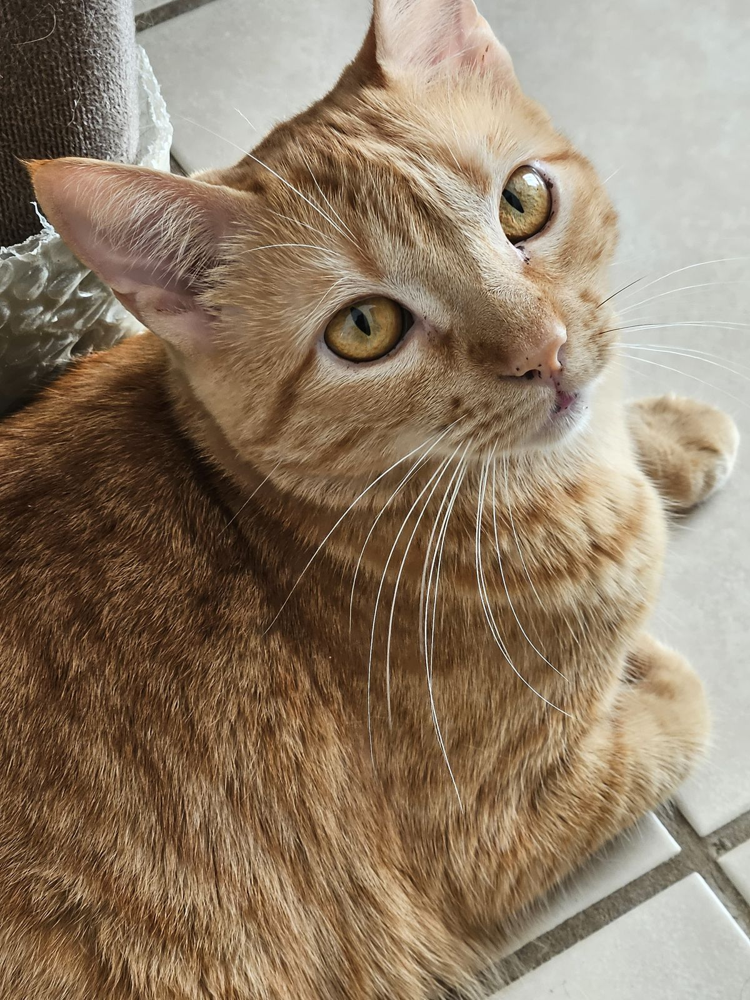
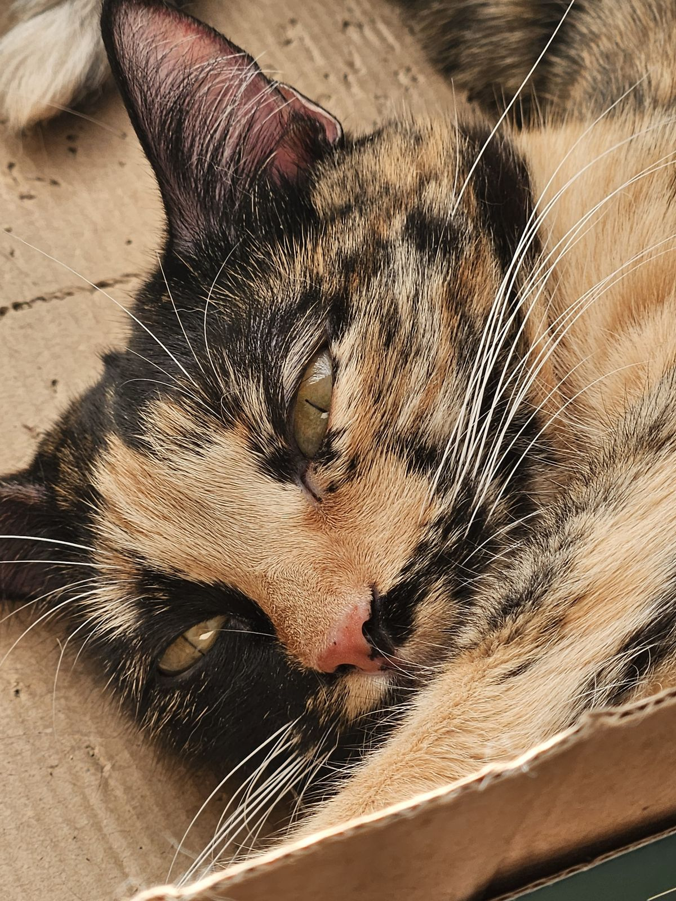

Natural de Taquaritinga-SP e atualmente residindo em Uberlândia-MG, sou um entusiasta da tecnologia com diversos interesses que tornam minha vida mais rica e completa.
Atualmente estou cursando Análise e Desenvolvimento de Sistemas na UNINTER, onde venho desenvolvendo minhas habilidades técnicas e minha paixão por programação e soluções tecnológicas.
Meus Hobbies
Jogar Video Game
Adoro explorar mundos virtuais e desafios estratégicos nos meus momentos de lazer.
Estudar para Concursos
Tenho como meta a aprovação em concursos públicos, dedicando parte do meu tempo aos estudos.
Viajar pelo Mundo
Conhecer novas culturas e paisagens é um dos meus maiores prazeres na vida.
Minha Paixão por Gatos
Sou um verdadeiro apaixonado por gatos! Esses animais incríveis me encantam com sua independência, inteligência e personalidade única.
Tenho um carinho especial pela forma como os felinos se comunicam e criam laços com seus humanos, e sempre que posso, ajudo protetores independentes e ONGs de animais.
Minhas Companheiras Felinas
Minha vida é muito mais alegre com a companhia das minhas três gatas incríveis. Cada uma com sua personalidade única:

Pandora
A mais velha e sábia do trio. Pandora adora observar tudo de lugares altos e tem um olhar que parece entender tudo. É a mãezona das outras duas, sempre cuidando e ensinando (mesmo quando não querem aprender).

Aurora
A energética do grupo! Aurora nunca para de brincar e está sempre inventando novas travessuras. Adora perseguir bolinhas de papel e tem um ronronar que parece um motorzinho. É a mais carinhosa e sempre vem receber visitas.

Penélope
A mais reservada e elegante. Penélope tem um porte aristocrático e adora manter sua pelagem impecável. É seletiva com seus afetos, mas quando escolhe alguém, é fiel para sempre. Tem um miado delicado que parece um canto.
Objetivos Profissionais
Com minha formação em Análise e Desenvolvimento de Sistemas, pretendo me tornar um profissional qualificado na área de tecnologia, combinando meus conhecimentos técnicos com minha capacidade de resolver problemas complexos.
Meu objetivo é contribuir para projetos inovadores que façam diferença na vida das pessoas, seja no setor público ou privado.